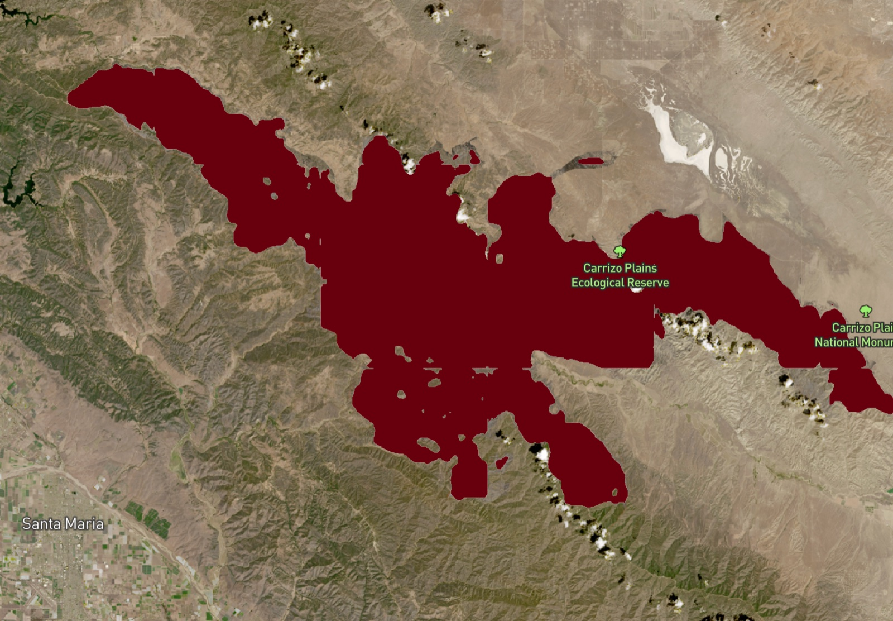
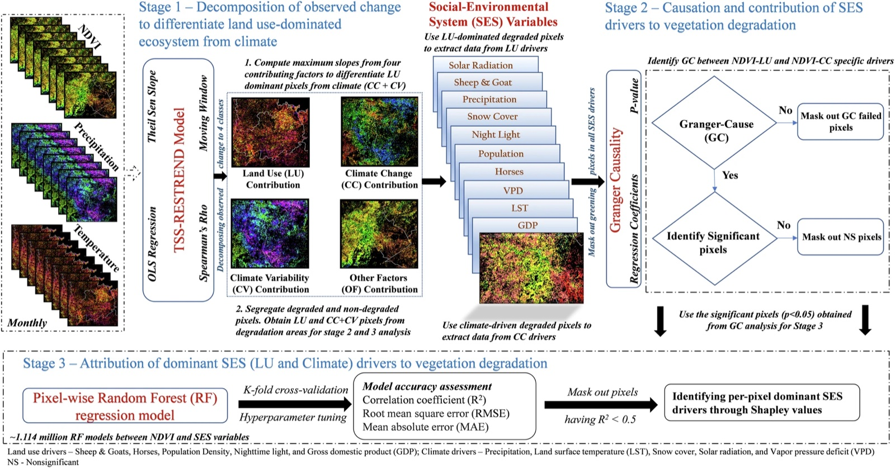
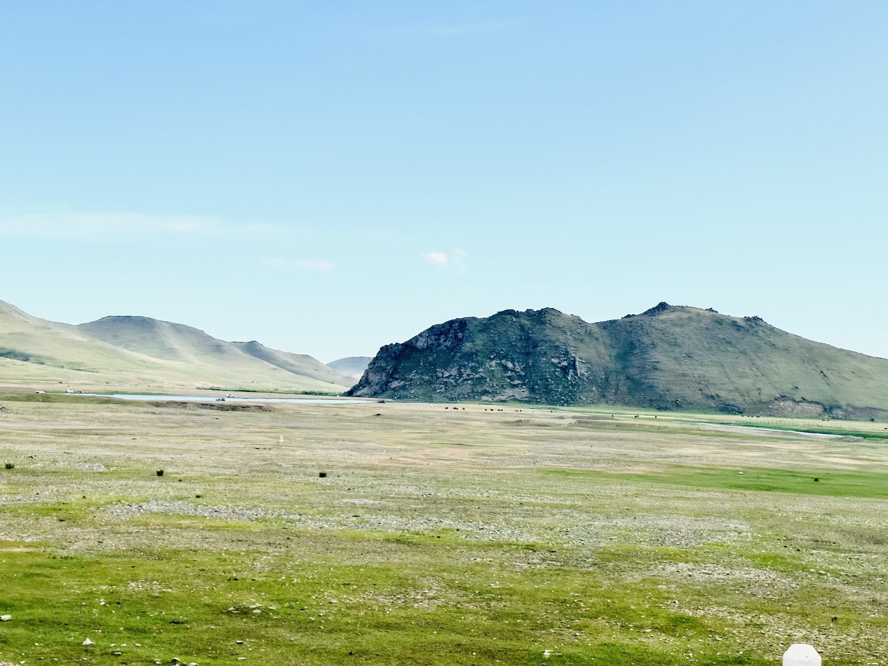
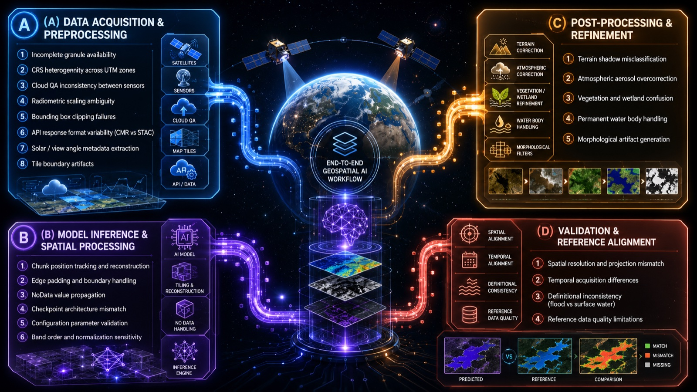
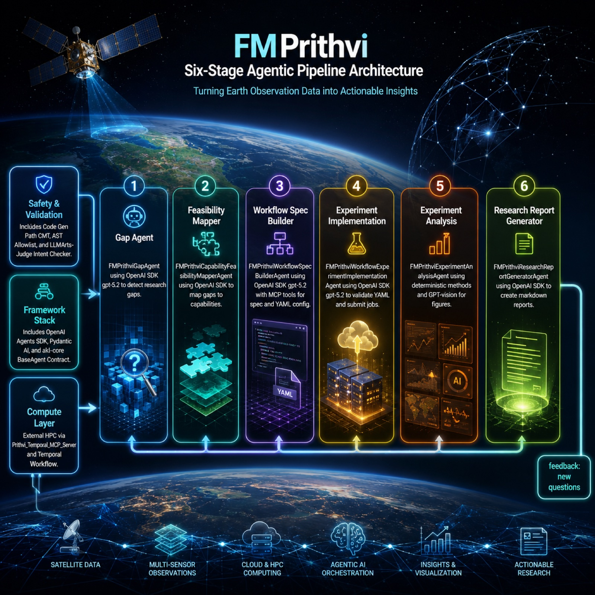
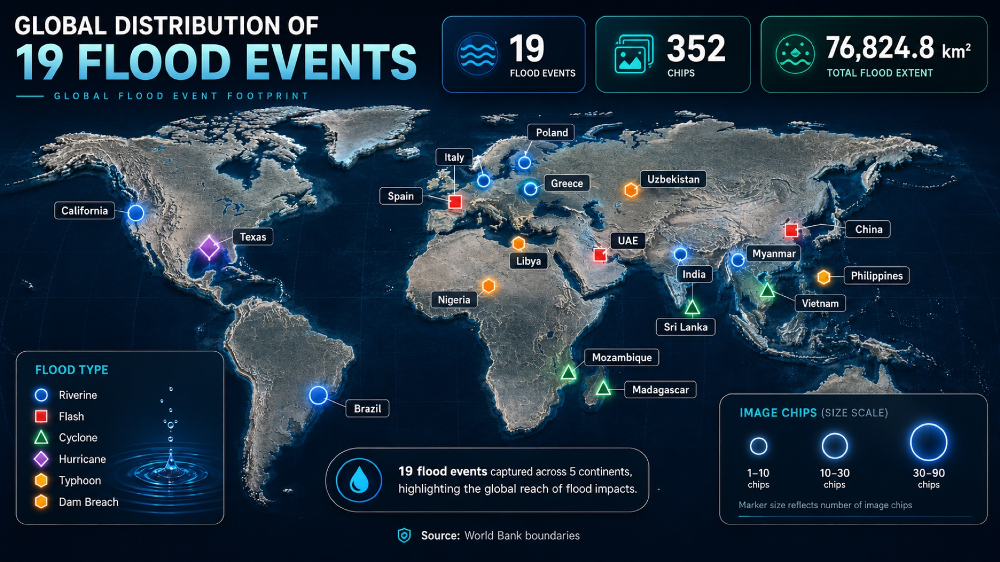
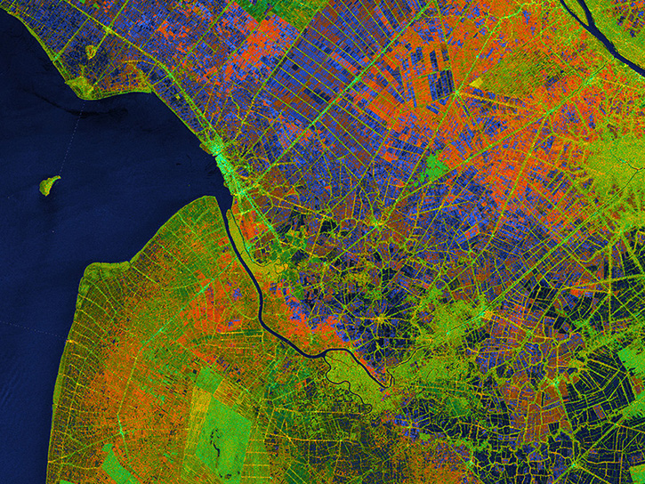

News
About
I am Venkatesh Kolluru, Ph.D., a Research Scientist III at NASA MSFC ODSI and the University of Alabama in Huntsville. I work across Earth observation, landscape ecology, and hydrology, combining satellite remote sensing, field data, statistical modeling, and machine learning. My current focus is operationalizing the Prithvi-EO-2.0 geospatial foundation model, moving research models into production pipelines that turn petabyte-scale satellite archives into decision-ready maps for flood, crop, burn-scar, and landslide monitoring. My doctoral research attributed two decades of vegetation change across the drylands of Central Asia to its climatic and human drivers.
Sustainability & Environment
University of South Dakota · CGPA 4.0 · 2025 Distinguished Dissertation Award. Vegetation change attribution across Kazakhstan.
Remote Sensing & GIS
NIT Karnataka (Surathkal) · ISTE Best M.Tech Thesis Award. Streamflow & soil-erosion modeling.
Professional Service
Topic Coordinator
"GeoAI for Environmental Monitoring" special issue — Frontiers in Remote Sensing.
NSF & NASA panels
Proposal reviewer for NSF CAIG (AI & Geosciences, 2025) and NASA NSPIRES (2026).
120+ articles reviewed
Across 20+ journals incl. Remote Sensing of Environment & J. Hydrology · Best Reviewer Award (IJAEOG). Student Rep, IALE–North America (2024–2026).
AI, Remote Sensing & Ecology
Applying machine learning, remote sensing, and statistical modeling across Earth observation and ecology, from operationalizing foundation models to attributing long-term ecosystem change.
Science foundation models in production
Operationalized NASA–IBM science foundation models end to end: Prithvi-EO-2.0 (600M parameters) for flood, burn-scar, landslide, and multi-temporal crop mapping over Harmonized Landsat–Sentinel imagery, and Surya for solar-flare forecasting, solar-wind prediction, and active-region segmentation from Solar Dynamics Observatory imagery. A lunar foundation model is next.

⤢ view model outputs
⤢ enlargeWhat drives dryland vegetation change
Built a multi-stage causal framework — trend analysis, Granger causality, Random Forest, and Shapley attribution — to disentangle how grazing, snow cover, climate, and human activity drove two decades of vegetation change across the drylands of Kazakhstan.

⤢ view methodsCross-scale biomass mapping
Fused drone and Sentinel-2 imagery with Random Forest and per-pixel uncertainty to map canopy cover and aboveground biomass across Mongolia and Kazakhstan — from 84 field sites to satellite scale.

⤢ enlargeRed-teaming AI systems
Authored a systematic red-teaming framework that surfaced 23 failure modes across 4 pipeline stages — acquisition, preprocessing, inference, and postprocessing. Fixing these deployment-level issues (not the model weights) recovered end-to-end precision from 4.9% to 98.6%. Presented at AGU 2025.

⤢ enlargeClosed-loop scientific workflow
A multi-stage agent-driven pipeline spanning literature gap-finding, hypothesis formulation, workflow specification, agent-run execution, and report generation — built with the OpenAI Agents SDK and Pydantic AI.
Projects & Platforms
R2O PRISM Portal
End-to-end production platform serving real-time foundation-model inference for flood, crop, burn-scar, and landslide tasks — automated HLS acquisition (CMR/STAC), tiled GPU inference, and Cloud-Optimized GeoTIFF outputs, demoed to senior NASA officials.

⤢ enlargeGlobal flood-mapping benchmark
Benchmarked the foundation model across 19 globally distributed out-of-distribution flood events (Iowa 2024, Sindh Pakistan 2022, Brazil 2024, Alabama 2019…), validated against independent reference products with patch-level analysis over 79,885 patches — showing land cover and flood type govern detection limits.

⤢ enlargeSentinel-1 SAR processing package
End-to-end SAR package (Python, GDAL, rasterio) for building-damage detection, processing Sentinel-1 SLC data through NASA JPL's OPERA RTC workflow, with a scene registry for reproducibility. Acquired matching Sentinel-1 SAR imagery for the MAXAR building-damage benchmark locations.
Dryland vegetation attribution · Kazakhstan
A multi-stage causal attribution framework (TSS-RESTREND, pixel-wise Granger Causality, Random Forest, Shapley) across 2.39M km² of Kazakhstan, attributing vegetation change to 10 social-environmental drivers.
Experience
Selected roles and field campaigns. Click any role to expand.
JAN 2025 — PRESENTResearch Scientist IIINASA MSFC ODSI · University of Alabama in Huntsville▾
- Fine-tuned and deployed the 600M-param Prithvi-EO-2.0 across flood, crop, burn-scar, and landslide tasks via the production platform.
- Architected a five-stage agent-driven workflow (CARE) with the OpenAI Agents SDK and Pydantic AI, automating the research-to-operations loop from literature gap-finding through experiment execution to report generation.
- Operationalized the Surya heliophysics foundation model for solar-flare forecasting, solar-wind prediction, and active-region segmentation, with production pipelines from Solar Dynamics Observatory FITS imagery via JSOC and DRMS.
- Authored a red-teaming framework for evaluating ML systems in production, identifying 23 failure modes across 4 pipeline stages.
- Designed rigorous benchmarks: flood model performance across 19 out-of-distribution events and crop model performance over 40 test cases. Lead author, manuscript submitted to Remote Sensing of Environment (arXiv preprint).
- Built pipelines ingesting petabyte-scale satellite archives via NASA Earthdata APIs (CMR, STAC), with automated preprocessing, multi-source integration, quality control, and Cloud-Optimized outputs.
- Collaborate with NASA scientists, software engineers, and IBM Research; mentor junior researchers.
JAN 2021 — DEC 2024Graduate Research AssistantUniversity of South Dakota · NASA LCLUC Project▾
- Causal attribution framework across 2.39M km² of Kazakhstan (Communications Earth & Environment, 2024).
- Led 2 international field campaigns (Kazakhstan 2022, Mongolia 2023) across 84 sites.
- Cross-scale sUAS–Sentinel-2 ML pipeline with per-pixel uncertainty (Remote Sensing of Environment, 2026).
- 36 structural equation models explaining >70% of NDVI variance (Environmental Research Letters, 2022).
- CGPA 4.0 · 2025 Distinguished Dissertation Award.
2019 — 2020Junior Research Fellow · Research InternIIT Kharagpur · IIT Bombay · EOMRV LLC▾
- Glacier-lake outburst risk assessment (IIT Bombay, CSRE).
- Real-time river–reservoir water-quality advisory system (IIT Kharagpur).
- Biomass estimation pipelines on Google Earth Engine for client deliverables (EOMRV, 2023).
Talks & Presentations
Recognition & Awards
Ground Truth
By day I study these landscapes through satellites. Off the clock, I go see them for myself.
Trips, national parks, and wanderings across five countries, each one a place I had only known as pixels before seeing it at eye level.
Hover a polaroid and the globe locks onto the site · Click to open the frames
Get in Touch
If your interests touch Earth observation, geospatial AI, ecosystems, or water, I would love to hear from you. Reach out to explore collaborations, exchange ideas, or open new avenues together.